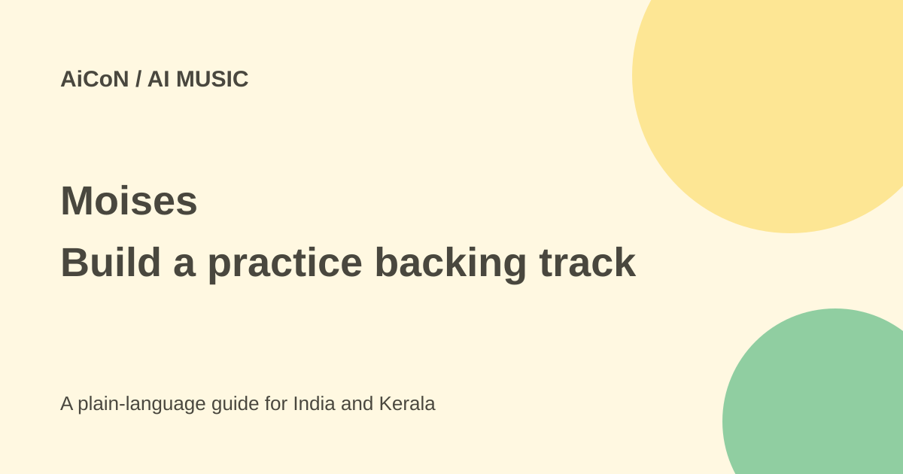

Moises: free AI backing tracks for music practice
Moises separates a recording into parts so you can mute or adjust them for practice. The Free plan is useful for short tracks, but it has upload and instrument limits.

What does Moises do?
The Moises app uses AI to separate vocals and instruments from a recording. Each separated part is often called a stem. You can turn down or mute a part and practise singing or playing with the remaining audio. It is not the same as having the original studio multitrack recording.
Its product page describes a wider set of music tools. This guide focuses on the free separation route in today's AiCoN post, not a promise that every advertised feature is free. AI separation can leave traces of another sound or remove part of the sound you wanted. Listen to the result rather than assuming a clean professional mix.
What is free?
The official support page says Free users can process five songs per month, each up to five minutes long. Another support article, updated 1 September 2026, confirms two preset separation choices:
- Two stems: Vocals and Instrumental.
- Four stems: Vocals, Drums, Bass and Other.
Choosing individual instruments beyond these presets requires Premium or Pro. A free download is not unlimited processing. Check your account's remaining allowance before uploading a track, and do not assume a rejected or repeated upload has no effect on its quota.
How to make a practice track
- Open the official Moises app or product website and check the account requirements.
- Choose a recording you own or have permission to process.
- Keep the file within the current Free length limit.
- Upload it and choose the two-stem or four-stem preset.
- Wait for processing, then play the separated result.
- Lower or mute your part and adjust the other levels for practice.
- Listen for errors before relying on it for rehearsal or a public performance.
For singing practice, muting vocals may be enough. For bass practice, the four-part preset gives a separate bass control. A specific guitar, piano or other instrument is not automatically a separate Free stem just because you can hear it in the song.
Paid plans and billing
The current terms say plan prices and features are presented in the service, with pricing accessible after login. This guide does not invent an India price or assume a public promotion is your final offer. Check the actual billing period, taxes, renewal and cancellation terms before paying.
Subscription plans can renew automatically. Promotional trials have their own eligibility and end-of-trial rules. A permanent Free plan and a temporary paid-plan trial are different. Choose Free when you only intend to test its documented allowance.
Audio rights and age requirements
The terms require rights to the submitted content. Separating a song does not grant a licence to distribute it, publish a remix, use it commercially or bypass a streaming service's rules. Use your own recordings or material with suitable permission, and check the permitted use of any result you share.
The terms require users to be at least 13. Users aged 13-17 need a parent or guardian's consent. Most features require an account. Avoid uploading someone else's private voice recording without permission.
For Indian music learners
The same workflow can support practice with permitted Malayalam, Hindi or other recordings. This guide does not guarantee separation quality for every instrument, language or recording. Start with one short track and judge whether the result helps your actual practice.
What changed since the original AiCoN post?
This article expands today's #AI97 post with steps, billing cautions and the distinction between preset stems and individual instrument selection. The verified Free quota remains five uploads monthly, up to five minutes each.
Frequently asked questions
Can Free separate any instrument I choose?
No. Free has two documented presets.
Is the output always clean?
No. AI separation can contain errors.
Can I publish someone else's song after separating it?
Separation does not give you permission. Check the rights first.
Sources: Official Moises app · Free upload allowance · Free separation presets · Terms and rights. Checked 7 October 2026.